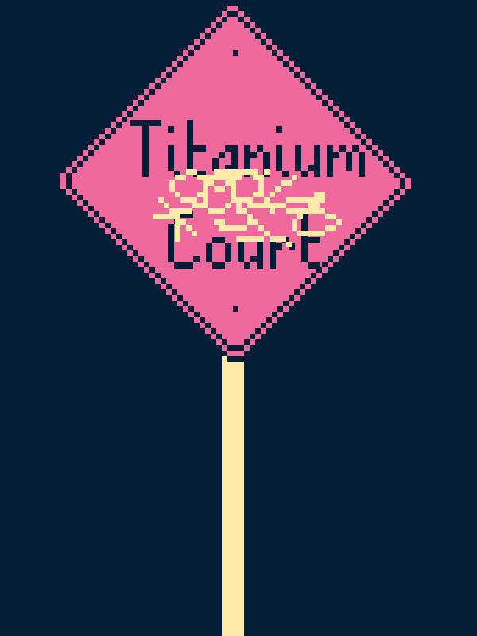

Titanium Court
Titanium Court
Details
 |
|
| Playtime | Not Played |
| Last Activity | Never |
| Added | 2026-10-05 12:55:11 |
| Modified | 2026-10-05 12:55:35 |
| Completion Status | Not Played |
| Library | Steam |
| Source | Steam |
| Platform | PC (Windows) |
| Release Date | 2026-04-23 |
| Community Score | |
| Critic Score | 74 |
| User Score | |
| Genre | Indie Puzzle Strategy Tactical Turn-based strategy (TBS) |
| Developer | AP Thomson |
| Publisher | Fellow Traveller |
| Feature | Single Player |
| Links | Steam Twitch GOG Wikipedia |
| Tag | Auto Battler Baseball Combat Comedy Funny Magic match-3 Narrative Philosophical Puzzle Resource Management Roguelite Singleplayer Story Rich Strategy Surreal Tactical Tactical RPG Tower Defense Turn-Based Tactics |
Description
Well what do we have here? Streetwise tough looking for answers, huh. Well, answers we got, assuming you've got the second half of our agreement? Excellent. Love the satisfying click of an opening briefcase. Come on in, pal. Here's all the "dirt" we uncovered on this "Titanium Court":
So, lotta people have heard of this game, but not a lot are coming clean about what it actually is. Most of the witnesses we "interviewed" just said it was "a fanciful rabbit-hole of unending delights" or some crap like that. Real coy operation they got going on over there, I'll tell ya what. Don't worry, we did manage to shake a few facts out of them. Here you go!
Title: Titanium Court
Developer: AP Thomson
Publisher: Fellow Traveller
Number of players: 1
Play time: 6-30 hours.
Now as for the genre we were having a lot of trouble pinning that down from testimony alone, so we "acquired" a copy to see what was up. (Hey what's a private investigation without a little bit of larceny, right?) Anyway, we sent it down to forensics. Let's look at what they have to say.
Forensics Report:
Titanium Court appears to be some kind of match-3 tower-defense roguelike. Or maybe it's a tower-defense puzzle strategy card roguelite? I hesitate to call it a deck-builder because you don't really build a deck but you do sometimes draft a variety of upgrades. Oh, there's also a lot of text but we skipped all of that. Not our department.
End Forensics Report
Yeah, I don't know what to make of that either. Maybe this is something the kids are into nowadays? I asked my cocky teenage son but he just rolled his eyes and made some kinda inscrutable hand gesture I can only assume he learned after getting too much screen time. Takes after his old man too much, little punk.
Oh, one more thing. Now I'm not trying to scare you, pal, but during the course of our investigation some clown delivered this box of unmarked bullets directly to our doorstep. Maybe they thought they were sending some kinda message, but it'll take more n' that to scare off our crew. My bet is this is just an unrelated prank, but I've included the bullets anyway, here at the end.
Bullets:
Puzzling Battles: Swap and match the battlefield terrain so it falls in your favor, or against it.
Puzzling Narrative: While you’re here, could you help the Court’s residents search for their missing queen? And could you help their queen search for her missing keys? And could you help the audience search for the Point? You can? Great!
Diverse and fulfilling career options: Warlord, Arsonist, Celebrity, Insurance Fraudster. Your time within the Court will qualify you for many of these exalted and lucrative positions.
Fully interactive shower: for certain definitions of "interactive" and certain definitions of "shower."
Anyway, that's all the info our investigation turned up. Can’t imagine what you’ll do with it, hehehe, but next time you need some dirt on an inscrutable critically-acclaimed independent videogame, you know who to call.